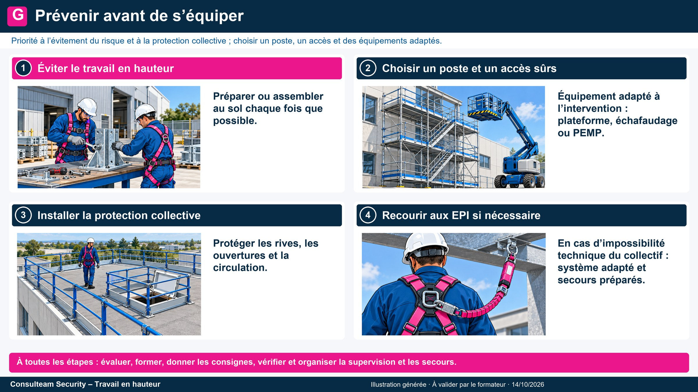
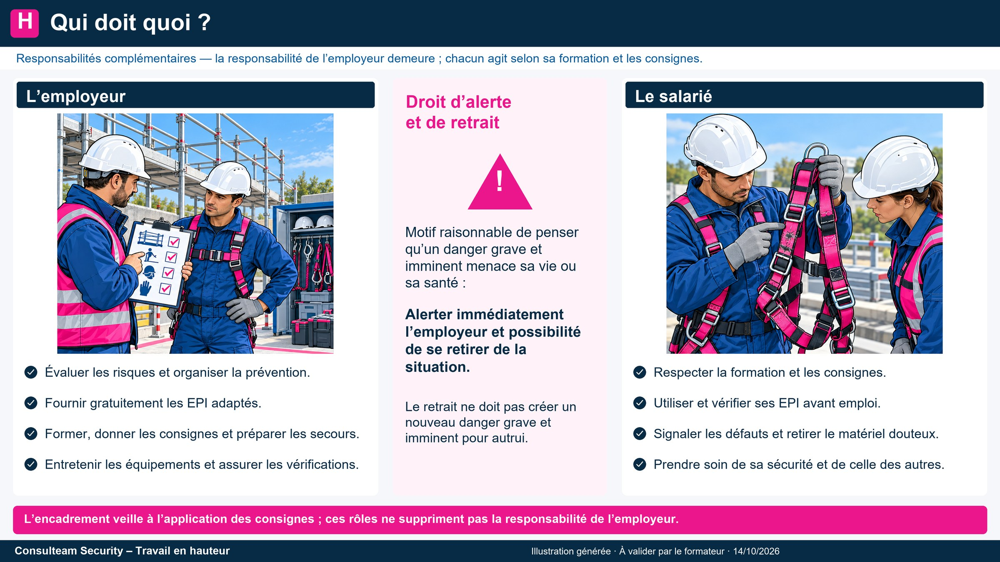
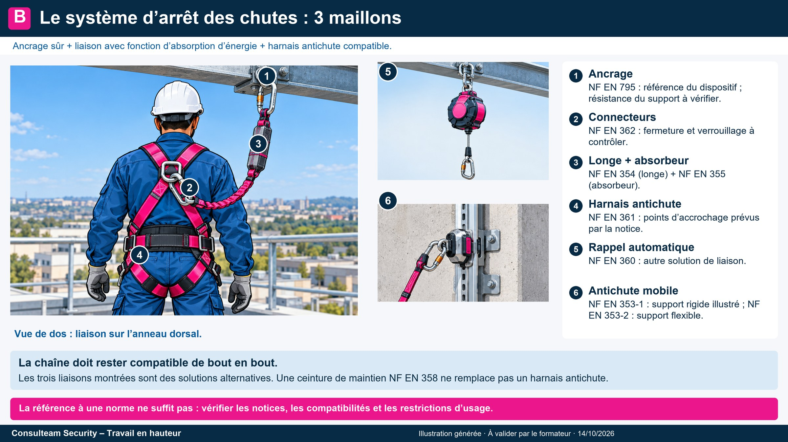
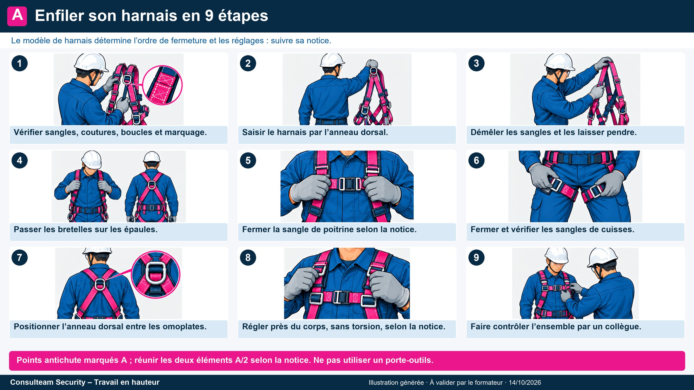
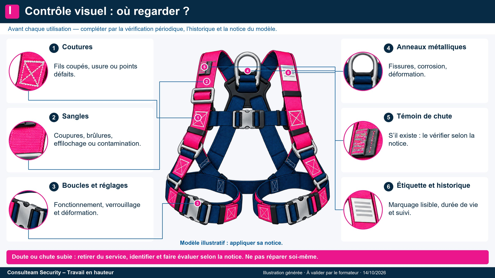
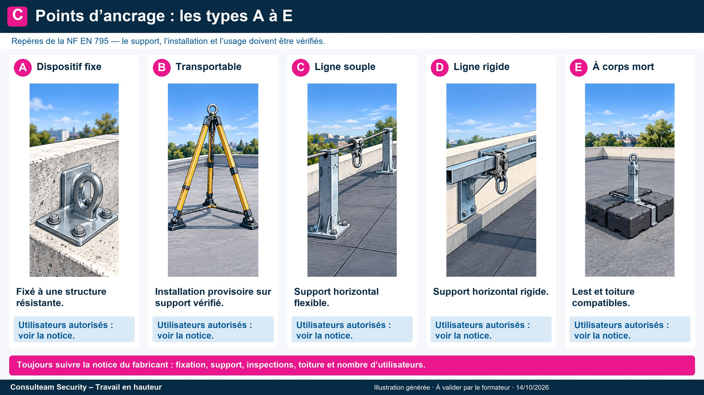
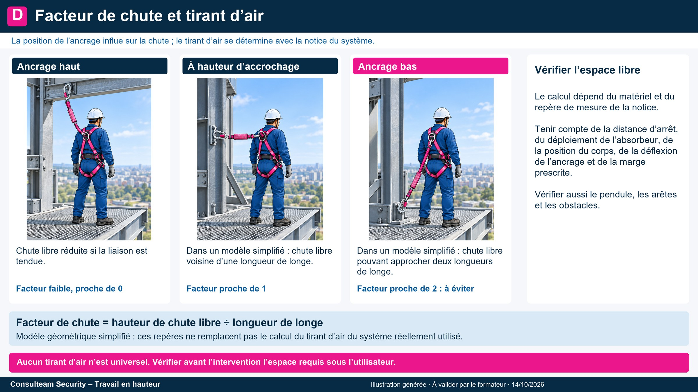
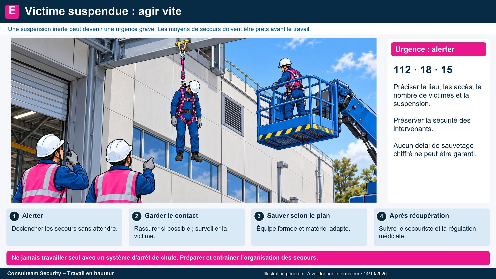
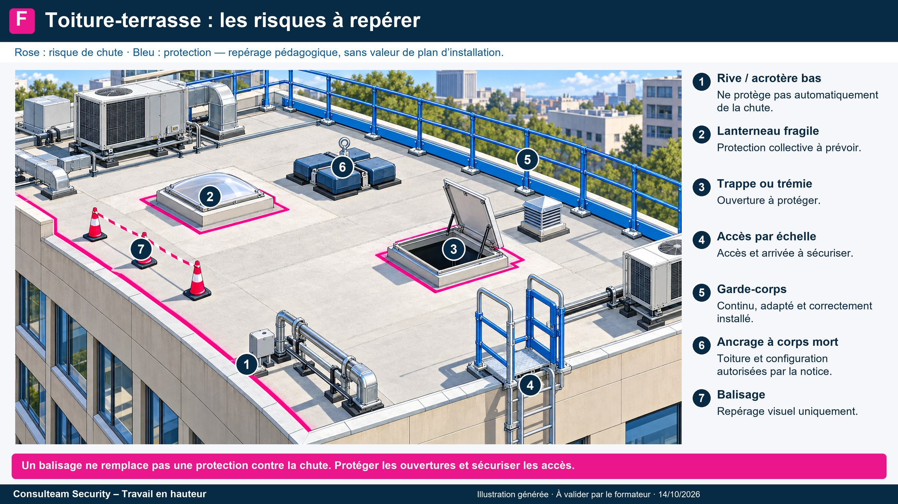

Compléments : normes, ancrages, chute et secours
Les repères à garder en tête en plus du support : quelle norme pour quel composant, quel ancrage, quelle chute, que faire d’une victime suspendue. Dans le doute, la notice du fabricant et la consigne du site priment.
Prévenir avant de s’équiper

- Éviter le travail en hauteur : préparer au sol, prévoir un accès permanent.
- Protection collective : garde-corps, filets, plateformes (elle protège tout le monde sans geste de l’opérateur).
- Équipement de travail adapté : échafaudage, plateforme élévatrice mobile de personnel (PEMP), échelle en dernier choix.
- Protection individuelle contre les chutes (harnais, longe) quand les mesures précédentes ne suffisent pas.
- Formation, autorisation, supervision : on ne s’improvise pas utilisateur.
Repères : principes généraux de prévention (L.4121-1 et suivants) ; travaux temporaires en hauteur (R.4323-58 et suivants) : plateforme conçue pour le travail, protection collective par garde-corps (R.4323-59) ou filets (R.4323-60), EPI antichute seulement quand ces mesures ne sont pas possibles (R.4323-61), échelle exclue comme poste de travail sauf exceptions (R.4323-63). Sources : INRS, DREETS, OPPBTP (voir « Sources et vérifications »).
Droits et obligations

L’employeur
- Évalue les risques et formalise le résultat (document unique).
- Met à disposition les EPI appropriés et veille à leur utilisation effective (R.4321-4) ; la sécurité ne doit entraîner aucune charge financière pour le salarié (L.4122-2).
- Forme à l’utilisation des EPI antichute (R.4323-104 à 106), fait vérifier le matériel et tient le registre de sécurité (R.4323-101).
- Organise les secours avant le début du travail.
Le salarié
- Applique les consignes et utilise correctement les EPI.
- Contrôle son matériel avant chaque usage.
- Signale toute anomalie ou situation dangereuse.
- Prend soin de sa santé et de celle des autres selon sa formation et ses instructions (L.4122-1).
En cas d’accident, la responsabilité pénale peut être engagée (homicide ou blessures involontaires, articles 221-6, 222-19 et 222-20 du Code pénal), et la faute inexcusable de l’employeur est reconnue de plein droit lorsqu’un risque signalé n’a pas été traité (L.4131-4). Sources : INRS, Travail et Sécurité n° 769.
Composants du système d’arrêt des chutes et normes

Un système d’arrêt des chutes est une chaîne de trois maillons : l’ancrage, la liaison, le harnais. Si un maillon est mal choisi ou défaillant, toute la chaîne l’est.
| Composant | Norme européenne | À retenir |
|---|---|---|
| Harnais d’antichute | EN 361 | Seul le harnais d’antichute arrête une chute. Anneau dorsal ou sternal. |
| Longe | EN 354 | Longueur limitée à 2 m selon la norme, jamais rallongée par un nœud. |
| Absorbeur d’énergie | EN 355 | Limite l’effort sur le corps lors de l’arrêt de chute (effort maximal de choc fixé par la norme). Se déploie en cas de chute : il faut du vide sous les pieds. |
| Connecteur (mousqueton) | EN 362 | Verrouillage manuel ou automatique, contrôlé à chaque usage. |
| Antichute à rappel automatique | EN 360 | Câble ou sangle qui se rétracte, bloque en cas de chute. |
| Antichute mobile sur support d’assurage | EN 353-1 (rigide) / 353-2 (flexible) | Coulisse sur rail ou corde dédiée : support et antichute vont ensemble. |
| Dispositif d’ancrage | EN 795 (+ CEN/TS 16415 si plusieurs utilisateurs) | Types A à E, voir plus bas. |
| Ceinture de maintien | EN 358 | Maintient en position de travail, n’arrête pas une chute. |
Le marquage de chaque composant indique sa norme : c’est la notice du fabricant qui fait foi pour les valeurs et la version applicables. La personne compétente au sens de la NF EN 365 effectue les vérifications périodiques.
Enfiler son harnais en 9 étapes

- Vérifier l’état : sangles, coutures, boucles, marquage.
- Saisir le harnais par l’anneau dorsal.
- Démêler les sangles et les laisser pendre.
- Passer les bretelles sur les épaules.
- Fermer la sangle de poitrine.
- Fermer les sangles de cuisses.
- Placer l’anneau dorsal entre les omoplates et la boucle sternale au milieu de la poitrine : ni trop bas (compression), ni trop haut (gorge).
- Serrer et ajuster près du corps, selon la notice du modèle (repère courant : une main à plat entre la sangle et la cuisse, pas davantage).
- Contrôle croisé par un collègue.
Contrôle visuel : où regarder ?

Un doute : on retire du service et on signale. Une chute, même arrêtée, retire l’équipement du service jusqu’à avis du fabricant ou d’une personne compétente.
Vérification périodique : au moins une fois tous les 12 mois par une personne compétente (arrêté du 19 mars 1993, R.4323-99 à 103), résultats consignés au registre de sécurité (R.4323-101). L’employeur peut raccourcir l’intervalle en cas d’usage intensif ou d’ambiance agressive. L’utilisateur formé (R.4323-104 à 106) contrôle l’état de son équipement avant chaque usage. La durée de vie maximale est fixée par le fabricant.
Points d’ancrage : types A à E

| Type | Nom | Exemple |
|---|---|---|
| A | Point fixe | Ancrage scellé ou fixé à la structure |
| B | Ancrage transportable provisoire | Trépied, sangle autour d’une structure, ancrage de toiture |
| C | Ligne de vie horizontale souple | Câble ou corde entre deux points |
| D | Ligne de vie horizontale rigide | Rail sur lequel coulisse un chariot |
| E | Corps mort | Lest posé sur toiture-terrasse |
Facteur de chute et tirant d’air

Facteur de chute = hauteur de chute libre ÷ longueur de longe. Facteur 0 : ancrage au-dessus de la tête. Facteur 1 : ancrage au niveau du harnais. Facteur 2 : ancrage sous les pieds, à éviter.
Exemple (ordre de grandeur, à vérifier avec la notice)
Le tirant d’air est la distance verticale libre sous les pieds qu’il faut pour arrêter la chute sans toucher d’obstacle. Il s’additionne : chute libre + déploiement de l’absorbeur (valeur de la notice) + distance du point d’attache du harnais aux pieds (1,5 à 2 m) + marge de sécurité. Exemple purement pédagogique, longe de 2 m accrochée à hauteur du harnais : 2 + 1,75 + 2 + 1 ≈ 6,75 m avec des valeurs maximales. Aucun tirant d’air générique ne garantit la sécurité : on calcule avec la notice du système réellement utilisé. Un système d’arrêt de chute ne doit pas permettre une chute libre de plus de 1 m : ancrer haut, longe courte, réduit tirant d’air et effort subi.
Ordre de grandeur pédagogique : la valeur à retenir est toujours celle de la notice du fabricant. Sources : DREETS, fiche EPI contre les chutes.
Victime suspendue : agir vite

- Alerter immédiatement (15, 18 ou 112), donner le lieu exact et depuis combien de temps la victime est suspendue.
- Victime consciente : lui demander de bouger les jambes ou de prendre appui des pieds, rester en contact, surveiller les signes de malaise.
- Décrocher selon la procédure de sauvetage prévue, avec le matériel prévu. Victime inconsciente : le dire aux secours et leur indiquer sa position (dos ou ventre).
- Après le décrochage : retirer le harnais, allonger la personne et surveiller ; arrêt cardio-respiratoire : réanimation sans délai.
- Prise en charge médicale systématique, avec la durée de suspension : après une suspension prolongée, un hôpital disposant d’une dialyse peut être nécessaire.
Sources : MSA, fiche « Syndrome du harnais » (2025) ; recommandations de la commission internationale ICAR MEDCOM (revue 2023). La procédure exacte relève du plan de secours du site.
Toiture-terrasse : risques à repérer

- Bord de toiture et acrotère bas : un acrotère bas ne protège pas d’une chute. Sur chantier du bâtiment, des mesures sont exigées dès 3 m de hauteur de chute (R.4534-85).
- Lanterneaux et plaques fragiles : on ne marche pas dessus, on les protège ou on les balise.
- Trappes et trémies : fermées ou protégées par garde-corps ou plancher provisoire (R.4534-6 sur chantier).
- Accès : échelle calée ou maintenue contre le glissement (R.4323-84), dépassant d’au moins 1 m le niveau d’accès (R.4323-87).
- Protections : garde-corps provisoire, ligne de vie sur corps morts, balisage de zone.
- Météo : le travail en hauteur est interdit si le vent, l’orage ou l’état du site menacent la sécurité (R.4323-68).
Lexique
- Antichute
- Dispositif qui bloque la chute et en limite les effets.
- Absorbeur d’énergie
- Élément qui dissipe l’énergie de la chute et limite l’effort sur le corps.
- Ancrage
- Point ou dispositif auquel on relie l’équipement.
- Corps mort
- Lest, sans fixation à la structure, qui sert d’ancrage.
- EPI
- Équipement de protection individuelle.
- EPC
- Équipement de protection collective.
- Facteur de chute
- Rapport entre la hauteur de chute libre et la longueur de longe.
- Longe
- Liaison entre le harnais et l’ancrage.
- PEMP
- Plateforme élévatrice mobile de personnel (nacelle).
- Tirant d’air
- Vide libre nécessaire sous les pieds pour arrêter la chute sans toucher le sol.
- Suspension inerte
- Situation d’une personne restée suspendue au harnais sans pouvoir se dégager.
- VGP
- Vérification générale périodique d’un équipement.
Sources et vérifications
Contrôle croisé INRS, DREETS, OPPBTP, MSA et textes du Code du travail. Ce que ce contrôle a confirmé ou corrigé :
- Confirmé : R.4323-58 à 63 (plateforme, garde-corps, filets, EPI, échelles), R.4323-68 (météo), R.4323-84 et 87 (échelles), R.4323-99 à 103 (vérifications, registre R.4323-101), R.4323-104 à 106 (formation, contrôle avant usage), arrêté du 19 mars 1993 (12 mois maximum), L.4131-1 et L.4132-1, articles 221-6, 222-19 et 222-20 du Code pénal, EN 795 types A à E et CEN/TS 16415.
- Corrigé : les EPI sont « mis à disposition » (R.4321-4) et la gratuité pour le salarié relève de L.4122-2 ; l’exemple de tirant d’air tient compte de la règle « pas plus de 1 m de chute libre » ; la prise en charge de la victime suspendue suit la fiche MSA 2025.
- Non établi : il n’existe pas de délai officiel « sans danger » pour la suspension. Le support dit « chaque minute compte ».
- Formation : recommandation d’un recyclage tous les 3 ans pour les EPI antichute (PréventionBTP, d’après la recommandation R430 de l’Assurance maladie) : c’est une recommandation, pas une obligation chiffrée du Code du travail.
Réglementation du travail en hauteur
Articles du Code du travail, vérifications, formation.
OPPBTPGuide Travaux en hauteur (octobre 2024)
Anticiper les risques de chute, surtout sur petits chantiers.
OPPBTP · vidéoVérifier et porter efficacement son harnais
Tutoriel de PréventionBTP.
MSASyndrome du harnais (2025)
Conduite à tenir pour une victime suspendue.
DREETSFiche EPI contre les chutes de hauteur
Textes, normes et vérifications.
Médecine (anglais)Suspension syndrome, ICAR MEDCOM
Revue et recommandations internationales.